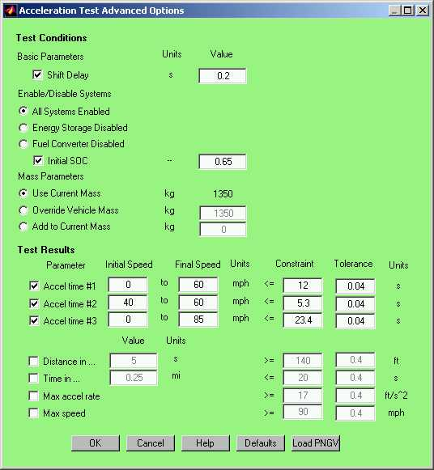

The acceleration test routine in ADVISOR will determine the acceleration performance of the current vehicle. The test routine can be accessed both from the GUI and the Matlab command window.
An acceleration test can be performed via the Simulation Setup window. By clicking Accel Options the Acceleration Test Advanced Options window appears. Note that the Constraint and Tolerance items are only visible and accessible when the Accel Options button is pushed from the Autosize Setup window.

The shift delay checkbox allows you to override the current shift delay during the acceleration test. The Enable Systems set of radiobuttons allows you to identify any systems that should not participate in the test. For example, you could determine the acceleration performance of your parallel hybrid in a worse case situation when you only have one power source, engine only or battery only. As long as the battery is enabled, the initial state of charge (SOC) can be specified by the user. The initial setting defaults to 50% of the usable range (cs_lo_soc to cs_hi_soc). The Mass Parameters allow you to override or adjust the vehicle mass during the acceleration test. By overriding the mass you will fix the mass at the specified value and by adding to the current mass you will add the specified amount to current mass. The results section allows you to specify the acceleration criteria of interest. Available options include 3 speed range acceleration times, a distance in a set amount of time, time in a set amount of distance, and max acceleration rate, and a top speed. While performing an autosize these conditions can be used as constraints.
From the Simulation Setup screen selecting the Acceleration Test checkbox runs an acceleration test during a drive cycle. To run an acceleration test without running a drive cycle, select Test Procedure and then TEST_ACCEL from the pulldown menu. If run as a test procedure the Results screen will provide access to the time dependent variable information.
Results are reported in the Results window.
An acceleration test can also be performed from the command window. The acceleration test routine is a function and requires the following format,
[resp]=accel_test_advanced(param1,value1,…param_n,value_n)
Inputs to the acceleration test function must be specified in parameter name, parameter value pairs. All input parameters are optional.
|
Parameter |
Description |
|
spds |
(mph), matrix of initial speeds in first column and final speeds in second column |
|
dist_in_time |
(s), time over which to measure max distance traveled (e.g. distance traveled in 5s) |
|
time_in_dist |
(mi), distance over which to measure time (e.g. 1/4 mi time) |
|
ess_init_soc |
(–), initial state of charge of the ess |
|
gb_shift_delay |
(s), delay time during a shift in which no torque can be transmitted |
|
disp_results |
(–), boolean flag 1==> display results, 0 ==> don’t display |
|
max_rate_bool |
(–), boolean flag 1==> calc max accel rate, 0 ==> don’t calc |
|
max_speed_bool |
(–), boolean flag 1==> calc max speed, 0 ==> don’t calc |
|
override_mass |
(kg), override vehicle mass to be used for the accel test only |
|
add_mass |
(kg), additional mass to be added to current vehicle mass for accel test only |
|
disable_systems |
(–), flag to disable power systems 1==> disable ess, 2 ==> disable fc |
A step function speed of 200 mph is requested of the vehicle. The vehicle will try request as much power and energy as is available while enforcing component based limits. At the end of the cycle, the acceleration times and other parameters are calculated from the achieved vehicle speed trace and saved to the workspace and/or the GUI.
Last Revised: 2/0/01:tm